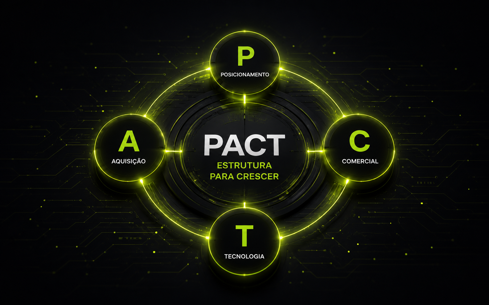
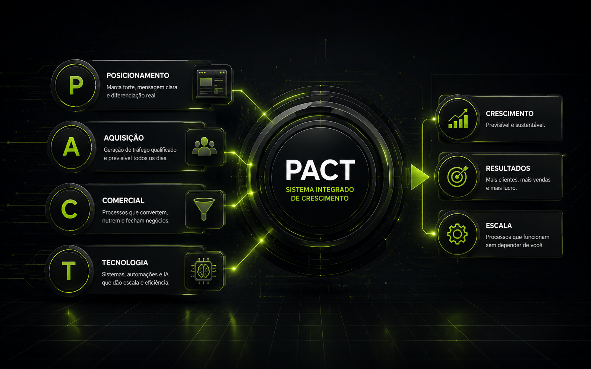
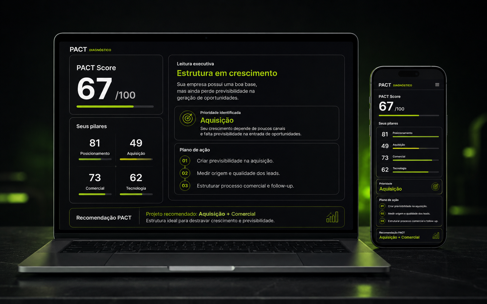

Mais tráfego não corrige um comercial desorganizado.
Gerar mais oportunidades para uma operação que perde leads pode apenas aumentar o desperdício.
O Método PACT analisa sua empresa como um sistema, identifica o que está limitando seu crescimento e estrutura as soluções certas através de quatro pilares: Posicionamento, Aquisição, Comercial e Tecnologia.
Talvez você esteja pensando em investir em tráfego. Talvez precise de um CRM. Talvez queira melhorar seu Instagram, criar um site ou colocar inteligência artificial na operação.
Mas nenhuma dessas respostas faz sentido antes de entender qual é o problema.
Gerar mais oportunidades para uma operação que perde leads pode apenas aumentar o desperdício.
Automatizar sem organizar primeiro tende a acelerar aquilo que já não funciona.
Antes da ferramenta, é preciso clareza sobre oferta, percepção, diferenciação e comunicação.
É por isso que o PACT enxerga o negócio como um sistema.
Quatro pilares que ajudam a entender onde a empresa está, o que está limitando sua evolução e quais estruturas deveriam ser priorizadas.

Oferta, diferenciação, marca, comunicação, presença digital, reputação e autoridade.
Orgânico, mídia, prospecção, indicação, parcerias e novos canais de geração de demanda.
Atendimento, venda, processo, qualificação, CRM, follow-up, proposta e conversão.
Inteligência artificial, automações, integrações, dados e inteligência operacional.
Os quatro pilares não trabalham separados.
Eles formam a estrutura que sustenta o crescimento.Ele identifica o que o negócio precisa e ativa as estruturas necessárias dentro de cada pilar.
Estruturamos a forma como sua empresa se apresenta, comunica valor e constrói confiança no mercado.
Primeiro entendemos como seus clientes chegam hoje. Depois identificamos novos canais e oportunidades capazes de aumentar previsibilidade.
Estruturamos o caminho entre o primeiro contato e a decisão de compra.
Depois de organizar o processo, usamos tecnologia para ampliar velocidade, consistência e capacidade operacional.
Uma empresa pode precisar de aquisição. Outra pode já ter demanda e estar perdendo dinheiro no comercial. Outra pode ter operação, equipe e clientes, mas estar limitada por tarefas manuais.
O papel do PACT não é implementar tudo. É descobrir onde agir, em que ordem agir e o que vale a pena construir agora.
Dizer “preciso vender mais” não revela automaticamente onde está o problema.
Possível gargalo: P + A
Possível gargalo: C
Possível gargalo: T
Possível gargalo: A
O método organiza a jornada entre entender o negócio e transformar a estratégia em estrutura funcionando.
Conhecemos operação, mercado, momento, objetivos e contexto do negócio.
Analisamos Posicionamento, Aquisição, Comercial e Tecnologia.
Identificamos gargalos e movimentos capazes de gerar maior impacto.
Definimos quais estruturas devem ser construídas e em qual ordem.
Transformamos estratégia em processos, ativos, canais e tecnologia funcionando.
Acompanhamos resultados e identificamos o próximo movimento do negócio.
Um Projeto PACT não começa com um pacote pronto. Começa com um problema, uma prioridade e um objetivo.

Dependendo do momento da empresa, o projeto pode envolver apenas uma frente ou combinar diferentes pilares.
O Diagnóstico PACT analisa sua empresa nos quatro pilares e transforma suas respostas em direção prática.
Você recebe uma leitura da estrutura atual do negócio, identifica os principais gargalos e entende quais movimentos deveriam ser priorizados.

Uma visão geral da maturidade estrutural do negócio.
Entenda onde sua empresa está forte e onde está vulnerável.
Uma interpretação sobre o momento atual da empresa.
Descubra aquilo que pode estar limitando o crescimento.
Veja quais movimentos devem receber atenção primeiro.
Entenda quais estruturas podem fazer sentido para o momento da sua empresa.
O principal ponto de atenção está em Aquisição. Antes de ampliar investimento, a prioridade seria estruturar canais mais consistentes de entrada de oportunidades.
Hoje o crescimento depende demais de poucos canais. Isso reduz previsibilidade e deixa a operação mais vulnerável.
Estruturaria pelo menos dois canais recorrentes de geração de oportunidades.
Identificaria quais canais realmente trazem oportunidades qualificadas.
Com aquisição e comercial organizados, ampliaria investimento e automação.
O diagnóstico indica quais frentes deveriam receber atenção primeiro.
Responda algumas perguntas e receba uma análise personalizada da estrutura atual da sua empresa.
Fazer meu Diagnóstico PACT Gratuito • poucos minutos • resultado personalizadoMinha trajetória foi construída na interseção entre vendas, comunicação, empreendedorismo e tecnologia.
Ao longo dos anos, vivi operações comerciais, vendas pelo WhatsApp, prospecção, construção de soluções digitais, inteligência artificial, automação e estruturação de negócios.
Construí tecnologia para melhorar atendimento e vendas. Estruturei processos comerciais. Trabalhei aquisição. Criei presença digital para empresas. Testei ofertas, prospectei, vendi, errei e ajustei.
E quanto mais eu observava empresas diferentes, mais uma coisa ficava clara:
“O problema quase nunca era apenas uma ferramenta. Era a forma como as partes do negócio estavam conectadas.”
Foi dessa visão que nasceu o PACT: uma forma de enxergar empresas antes de tentar consertá-las.
“Quando entro em uma empresa, não quero começar perguntando se ela precisa de site, tráfego ou inteligência artificial. Quero entender como o negócio funciona, onde perde oportunidades e qual movimento realmente pode mudar o próximo nível.”
Diego NogueiraNão. O PACT é um método de estruturação de negócios. Dependendo do diagnóstico, um Projeto PACT pode envolver estratégias e implementações que normalmente seriam contratadas separadamente.
Não. A análise considera os quatro pilares, mas a execução acontece por prioridade. Sua empresa pode precisar de apenas uma frente ou de uma combinação específica entre os pilares.
O método analisa a estrutura do negócio, não apenas o segmento. A aplicação varia de acordo com mercado, operação, momento e objetivos da empresa.
Sim. O diagnóstico funciona como o primeiro passo para compreender a estrutura atual da empresa, identificar gargalos e enxergar prioridades.
Não. O diagnóstico entrega uma leitura sobre o negócio e não gera obrigação de contratação.
Quando existe aderência entre o problema identificado e nossa capacidade de execução, podemos estruturar um Projeto PACT para implementar as prioridades identificadas.
Você pode continuar investindo em soluções isoladas. Ou entender primeiro o que realmente está limitando o seu negócio.
Fazer meu Diagnóstico PACTO Diagnóstico PACT será conectado aqui. Em breve você poderá responder ao quiz e receber seu relatório personalizado.